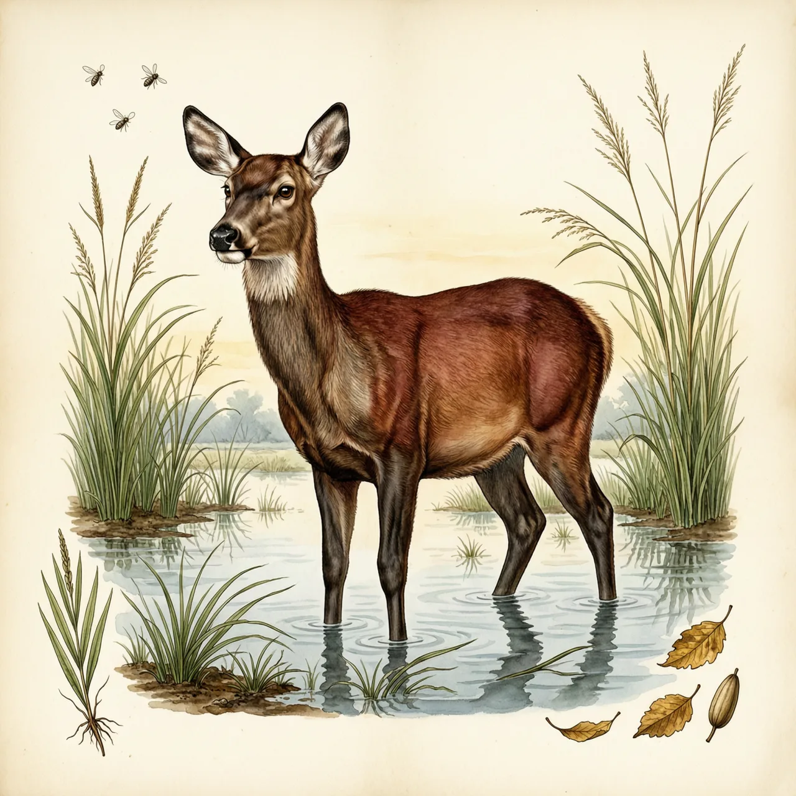
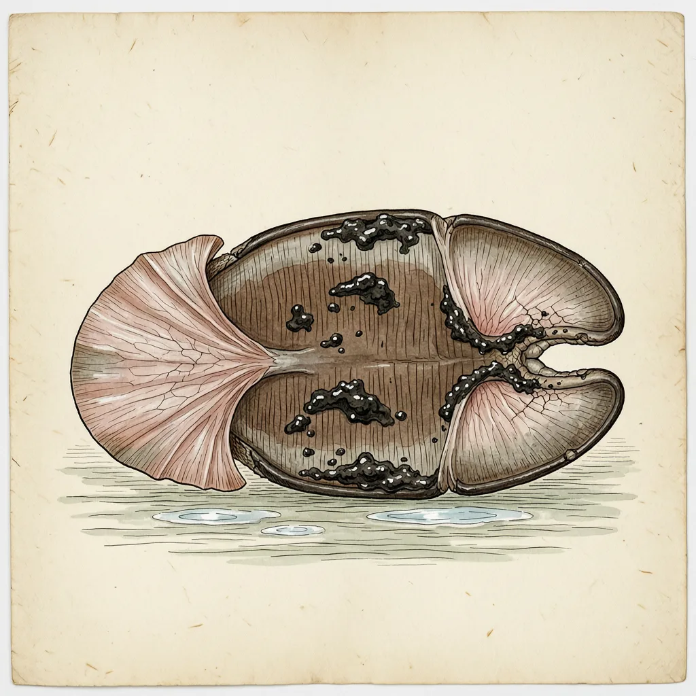

沼泽鹿是南美洲体型最大的鹿，一般重150公斤，离不开季节性泛滥的湿地。它的蹄宽大，趾间有具弹性的膜，既能在烂泥上行走，也便于游泳。过去它遍及南美，如今分布退缩；捕食它的美洲豹与美洲狮几乎从栖息地消失，主要威胁是水坝和欧洲牛带来的传染病。
水一漫上来，潘塔纳尔的草地就成了半米深的浅塘，这正是沼泽鹿最自在的刻度。它是南美洲最大的鹿，身长可达2米、高1.2米，却离不开季节性泛滥的湿地。历史上它的分布遍及整个南美洲，如今退缩到巴西巴拉那州和巴拉圭的沼泽湖泊，以及亚马逊地区。沼泽里高立的植物既是它的食物，也能替它遮挡追兵的视线。
沼泽鹿的蹄大而宽，趾间连着一层有弹性的膜，踩进烂泥时向两侧张开，像给自己垫了一双雪靴；同一套构造也帮它划水，它是出名的游泳能手。它主要在夜间活动，独居或以少于6头的小群生活，不占领地，在分布范围内四处觅食。到了旱季，它会减少活动，多留在水边。
最容易让人意外的是：威胁沼泽鹿的名单上，捕食者几乎被划掉了。它的主要天敌美洲豹和美洲狮，差不多已经在它的栖息地里完全消失。只有雄鹿长着长60厘米的网状鹿角，过去人们为鹿角猎杀它，如今已受到管制。如今轮到栖息地和疾病：亚塞瑞塔水坝破坏了它依赖的沼泽，来自欧洲牛的传染病也是威胁。幼鹿在10月到11月间出生，通体白色，一年之后才换上成体的赤褐色。
